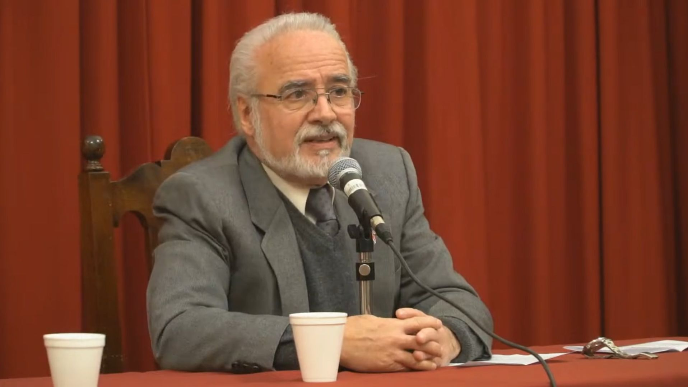

Desde una perspectiva singular y con un enfoque socio cultural muy preciso, el destacado escritor e historiador Prudencio Bustos Argañaraz, realizó una pintura de época que nos permitió apreciar un paisaje que nos aproximó a la Córdoba donde Ignacio Duarte y Quirós fundó uno de los colegios más emblemáticos de nuestro país.
Con su disertación "La Córdoba de Duarte y Quirós", dejó entrever el nacimiento de una ciudad pujante, que comenzaba a desarrollarse en varias direcciones, tuvo en aquellas primeras familias y en los intereses culturales de sus habitantes, la impronta que originaría instituciones como el colegio máximo, luego universidad, y el convictorio de Monserrat que acompañarían su desarrollo marcado con una identidad que la diferenció claramente de otras regiones de nuestro país.
En aquella Córdoba cruzada por tantos vaivenes se fue gestando una cultura basada en prestigiosas instituciones y en un modo de entender el progreso de manera propia.
Hoy, Córdoba expresa esa realidad que ya estaba implícita en el espíritu de sus fundadores. Pocas ciudades conviven con ese tesoro que se respira en "la gran manzana". En esas calles por las que transitamos día a día…
Ver la conferencia completa
▶ Ver en YouTube →Concluida la impecable disertación del Dr. Bustos Argañaraz, el Octeto de la Banda Sinfónica Municipal nos brindó un extraordinario concierto basado en las composiciones de un artista argentino cuya obra ya le pertenece a la música universal: el gran Astor Piazzola.
Un enorme reconocimiento a su director y a los músicos que nos permitieron disfrutar de interpretaciones notables en la segunda noche del ciclo "Pensar para ser libres". A todos ellos, nuestro especial agradecimiento.